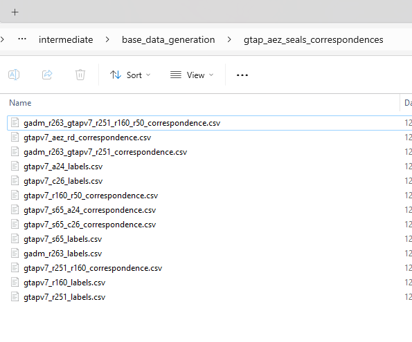

p.lulc_correspondence_dict = hb.utils.get_reclassification_dict_from_df(p.lulc_correspondence_path, 'src_id', 'dst_id', 'src_label', 'dst_label')}`
# return a very useful dictionary for various reclassification tasks:Conventions
Id, index, label, name, description
In programming, id and index are two different concepts that are used in different contexts.
id refers to the unique identifier of an object. In this specification, it is an integer that is sorted by the ONE in the many-to-one correspondence, sorted alphabetically at generation time (though not necessarily to remain sorted given downstream correspondences).
index refers to the position of an element in a sequence (e.g. a list or a string). In the context of a correspondence file, this is the position of the row within the sorted spreadsheet, but is not assumed to be stable and shouldn’t generally be used.
labelheader refers to an (exactly) 4 character string that is lowercase-alphanumeric with no special symbols besides underscore. Useful for the Header label in har files. Technically is case insensitive but we assume lowercase.
labelshort refers to an 8-character or less string that is lowercase-alphanumeric with no special symbols besides underscore. Useful for .har files.
label refers to a string that is lowercase-alphanumeric with no special symbols besides underscore
name refers to a string of any ascii characters with python-style escaping of special characters: 'She\'s a star!' . It’s assumed to be short enough to view as a column header or plot label
Descriptionrefers to a name of any length with detailed description, possibly even formatted MD text.
If there is a domain, described below, id, index, etc all should prepended with it to be eg gadm_id.
Id, Index etc. in the context of vector data
Note that geopandas assumes the vector data are indexed with an FID. This is the order in which the geometries are added to the file and can get wonky when dealing with legacy file types (like ESRI Shapefiles). Additionally, when you write a GPKG to a CSV, it will not include the fid, so you might lose data. To fix this, EE spec requires that any GPKG when saved as a CSV have a new column, id added as the first col, which is generated starting at 1 and incrementing up by 1 after having sorted the data on the simplest non-fid label (e.g., iso3_label). See gtap_invest_generate_base_data.py.
Labels files
Based on how the GTAP database is structured, EE spec defines several file types of files to systemetize how dimensions/sets are defined (and then used in e.g. figure plotting). A single dimension is first defined by a labels file. The labels file has at least 3 columns of domain_id, domain_label, domain_name and optionally a domain_description. If present, a column needs to be fully filled (no missing values). Label files are used in other contexts to, e.g., go from id to name for labeling an axis on a plot, as well as building the correspondence files below.
Correspondences
Model linkages often require mapping many-to-one relationship in a consistent way. Correspondence files define this via a src-to-dst (source and destination). They are named according to a relatively complex pattern. Specifically, using the file path gadm_r263_gtapv7_r251_r160_r50_correspondence, we have a domain label gadm followed by a src dimension-size pair r263 (where r is a label, short for region in this case, and 263 is the number of unique entries in that dimension). To be a correspondence,there needs to be at least one other dst dimension-size pair, where in this case there are 3 additional dimension-size pairs (r251, r160, and r50). However, the later three pairs are from a different domain, namely that of gtapv7. Each pair is identified with the domain most identified most closely prior. The dst dimension-size pairs are sorted in order of decreasing size. The dst dimension-size pairs are then followed by the word correspondence. This example creates a correspondence file that maps from the GADM 263 regions to the GTAPv7 251 regions, which are then mapped to the GTAPv7 160 regions, which are then mapped to the GTAPv7 50 regions.
An example of a 2-type correspondence is below. However, in this file, src and dst would have to be replaced with the specific domain names used.
| src_id | dst_id | src_label | dst_label | src_description | dst_description |
|---|---|---|---|---|---|
| 1 | 1 | aus | oceania | Australia | Oceania (including NZ and AUS) |
| 2 | 1 | nzl | oceania | New Zealand | Oceania (including NZ and AUS) |
Here are the specific labels and corespondence files generated for gtapv7-aez-rd:

If defined exactly right, 2 dimensional correspondence files will work with Hazelbean via
seals_utils.set_derived_attributes(p)
and
return_dict = {} return_dict['dst_to_src_reclassification_dict'] = dst_to_src_reclassification_dict # Dict of one-to-many keys to lists of what each dst_key should be mapped to from each src_key. Useful when aggrigating multiple layers to a aggregated dest type
return_dict['src_to_dst_reclassification_dict'] = src_to_dst_reclassification_dict # Useful when going to a specific value.
return_dict['dst_to_src_labels_dict'] = dst_to_src_labels_dict # Dictionary of lists of labels that map to each dst label
return_dict['src_ids'] = remove_duplicates_in_order(src_ids) # Unique set of src_ids r
return_dict['dst_ids'] = remove_duplicates_in_order(dst_ids) # Unique set of dst_ids
return_dict['src_labels'] = remove_duplicates_in_order(src_labels) # Unique set of src_labels
return_dict['dst_labels'] = remove_duplicates_in_order(dst_labels) # Unique set of dst_labels
return_dict['src_ids_to_labels'] = {k: v for k, v in zip(return_dict['src_ids'], return_dict['src_labels'])} # one-to-one dictionary of src ids to labels
return_dict['dst_ids_to_labels'] = {k: v for k, v in zip(return_dict['dst_ids'], return_dict['dst_labels'])} # one-to-one dictionary of dst ids to labels
return_dict['src_labels_to_ids'] = {k: v for k, v in zip(return_dict['src_labels'], return_dict['src_ids'])} # one-to-one dictionary of src labels to ids
return_dict['dst_labels_to_ids'] = {k: v for k, v in zip(return_dict['dst_labels'], return_dict['dst_ids'])} # one-to-one dictionary of dst labels to ids}Among other possibilities, this could be used for reclassifying LULC geotiffs via
rules = p.lulc_correspondence_dict['src_to_dst_reclassification_dict'] hb.reclassify_raster_hb(raster_path, rules, output_path)Combined ids
One special case of ids is when two different ids are combined together leveraging their decimal position to compress data. For example, if you want a Region-AEZ-specific id stored in single column, you can do that by saying the joined id is 5 digits long, the first three correspond to ee_r264 and the final two correspond to aez18, as in this example:

In the event of a combined id, not that the _id column above has two region-specifications combined (which otherwise violates the ee spec defined above for non combined ids).
Correspondences with geometries
# The rules for naming correspondences are a little different when adding geometry to the data. Because}
# # only 1 geometry can be assigned per file, and becasue membership of aggregated regions and their
# # members can get confusing, each correspondence file keeps all the labels but then is also saved along
# # with a geometry file that drops the other labels (and the word correspondence in the filename).
p.ee_r264_correspondence_vector_path = p.get_path(os.path.join('gtap_invest', 'region_boundaries', 'ee_r264_correspondence.gpkg'))
p.ee_r264_vector_path = p.get_path(os.path.join('gtap_invest', 'region_boundaries', 'ee_r264.gpkg'))More on naming Conventions
The names of project-level variables are carefully defined. For example, in gtapv7_r251_r160_correspondence_input_path,
- The
inputwhen put right before the word path implies it is a raw asset we obtained from an external source but haven’t processed it yet. This means that it can be a non-compliant XLSX file. Aslo, path implies that it is a string type that points to a location in a storage device. - In this name, we see two other structures. First, the
gtapv7label indicates the “domain” of the correspondence defined in all of the following dimensions (until another domain label). Above, this means that it is the 251 regions, as defined by the gtapv7 domain, mapped to the 160 regions in the same domain.
You can have multiple mappings in a single correspondence file. For example, gtapv7_r251_s65_r50_s26_correspondence_input_path, we are mapping r251 to r50 and s (sectors) 65 to s26, all in the gtapv7 domain.
Appart from correspondence files, we also have labels files, such as gtapv7_r251_labels_path. Labels files are for a single set/variable/dimension but map together the synonymous categorizers. Specifically, it must have an id, label, and name, all filled out for every entry. It can optionally have others like description.
In the filename gtapv7_r251_labels_path we extract from the input_path and write a EE-compliant labels table for the gtapv7 r251 set. In the filename gtap11_gtapaez11_region_correspondence_path, we use these regions and then connect it to the gtapaez11 labels. We can infer also that it is from a mapping labeled gtap11 to gtapaez11 and that the variable in question is the regions while the word correspondence then indicates this is a many-to-one mapping file.
Note that the file path says “regions” while the column label in the CSV says “region”.
p.gtap11_region_correspondence_input_path = os.path.join(p.base_data_dir, 'gtappy', 'aggregation_mappings', 'GTAP-ctry2reg.xlsx')
p.gtap11_region_names_path = os.path.join(p.base_data_dir, 'gtappy', 'aggregation_mappings', 'gtap11_region_names.csv')
p.gtap11_gtapaez11_region_correspondence_path = os.path.join(p.base_data_dir, 'gtappy', 'aggregation_mappings', 'gtap11_gtapaez11_region_correspondance.csv')Variable and Scenario Naming Conventions
To keep track of the MANY different filetypes, data processes, variables, scenarios, policies etc, please follow exactly the specifications below.
The word label refers to a relatively short string (preferably 8 characters long or less) with no spaces, underscores or punctuation (but may have hyphens). This is case-sensitive, but try to avoid capitalization.
The word short_label refers to a label that is strictly less or equal to 8 characters to ensure compatibility with HAR files.
The word name refers to a longer string that describes a specific label with a 1:1 correspondence. Will usually be defined via a correspondence dictionary.
The words index, indices or id refers to numerical data that describes a label with a 1:1 correspondence. Will usually be defined via a correspondence dictionary. If both are used, index/indices refer to a unique, ordered list of ints while an id/ids refer are unique but not necessarily ordered.
The word class refers to LULC class. Consider renaming this to lc-class?
Scenarios are defined in the following nested structure:
Label (with no hyphens) for Exogenous Assumptions (e.g., which SSP, which GDP, which population). Typically this will be fully defined by the SSP.
Label (with no hyphens) for Climate Assumption (which RCP)
Label (can have hyphens) for which model is used (e.g., magpie, luh2-message). Only model is allowed to have hyphens (because they are used for multistep scenario processing of counterfactuals)
Label for Counterfactual. This often represent policy Assumptions/Definition and can include BAU, which is a special counterfactual against which other policies are compared. Different counterfactuals correspond to different shockfiles in the econ model or different LUC projection priorities, etc.
Counterfactuals may have multiple processing steps, which will be denoted by appending a hyphen and exactly 4 chars to the end of the base counterfactual label.
- IFor example, a run excludes consideration of ES, insert “-noes”, at the end of the policy_name if it does include ES, postpend nothing (as this will be the one that is referenced by default)
Year
When the variable is singular, it must be an int. If it is plural, as is ints in a list. However, when either is stored in a dataframe, always type always type check as follows:
If singular, do str(value), int(value) or float(value) as appropriate when reading from the df into a python variable.
If plural, assume the df value is a space-delimited string that needs to be split, e.g. as [int(i) for i in value.split(’ ‘)], or’ ’.join(values) if going into the DF
Three types of years exist, including
- p.base_years, (which recall will always be a list even if there is a single entry because the variable name is plural)
Together, the labels above mean that the scenarios can be represented by directories as follows:
ssp2/rcp45/luh2-message/bau/filename_2050.tif- Note, the last layer of the hierarchy will be included as a the suffix of the filename start rather than as a directory (also see below for filename conventions)
For filenames, there are two possible conventions:
Implied: This means that the directory structure above defines all the labels with the exception of year (which is postpended to the filename label) and the current variable name (such as lulc) which appears at the front of the filename.
- e.g.,
project/intermediate/convert_netcdf/ssp2/rcp45/luh2-message/bau/lulc_2050.tif
- e.g.,
Explicit: Even if a file is in a directory which implies its labels, explicit file naming will always include each label (and the variable label stays in front of the filename), so the above example is:
project/intermediate/convert_netcdf/ssp2/rcp45/luh2-message/bau/lulc_ssp2_rcp45_bau_luh2-message_2050.tifAnd if there are no ES considered, it would be
project/intermediate/convert_netcdf/ssp2/rcp45/luh2-message/bau/lulc_ssp2_rcp45_bau_luh2-message_2050.tif
Because labels have no spaces or underscores, it is possible to convert the nested structure above to a single string, as in
filename_ssp2_rcp45_policyname_year.tif.Filetypes that supported in this computation environment include
Netcdf with the above listed dimensions in the same order
A set of geotiffs embedded in directories. Each label gets a directory level expect for year, which by convention, will ALWAYS be the last 4 characters of a filename before the extension (with an underscore before it).
A spreadsheet linkable to a geographic representation (e.g., a shapefile or a geopackage) in vertical format
Also we will create a set of tables to analyze results
These will define Regions (
shp) for quick result plottingSpecifically, we will have a full vertically stacked CSV of results, then for each Report Archetype we would output 1 minimal info CSV and the corresponding Figure.
Miscellaneous:
- base_years is correct, never baseline_years (due to confusion between baseline and bau)
Scenario types
- Three scenario_types are supported: baseline, bau and policy
- Baseline assumes the year has data existing from observations (rather than modelled) and that these years are defined in p.years (and identically defined in
p.base_years).- One exception is when eg GTAP is used to update the base year from 2017 to 2023, and then policies are applied on 2023.
- BAU and policy scenarios assume the results are modelled and that their years are defined in p.years (but not
p.base_years)
- Baseline assumes the year has data existing from observations (rather than modelled) and that these years are defined in p.years (and identically defined in
- Clarify what is the naming difference between src dst versus input output. Is the former only for file paths or can it also be e.g. array. OR does this have to do with if it is a function return.
- Proposed answer: src/dst is a pointer/reference to a thing and Input/Output is the thing itself. Esp useful for paths.
- Similarly, _path and _dir imply the string is a reference, so src_path and src_dir are common.
- You might often see e.g.
input_array = hb.as_array(src_path), illustrating this difference.
- Three scenario_types are supported: baseline, bau and policy